Community project. This is not a Microsoft product.
Copilot Interaction Logging
A build guide for collecting metadata about Microsoft 365 Copilot and Copilot Studio interactions from the Microsoft Purview unified audit log into Dataverse, using two Power Automate cloud flows and the Microsoft Graph audit log query API. From Dataverse you can report on usage with Power BI or any Dataverse client. The build collects no prompt or response text.
It is a personal project shared as-is under the MIT licence. Microsoft does not support it, and no SLA or warranty applies. Read the whole of this page, then obtain approval for the app registration and secret handling from your security and privacy owners, and build and test in a non-production environment, before you build it anywhere that holds real data.
Documentation only
No solution package, flow export or source code is published. This page and the action-by-action reference describe a tested reference build in enough detail for you to build your own. You own, secure and maintain whatever you build.
- Metadata onlyNo prompt or response text
- 3 Dataverse tablesInteractions, runs and errors
- Daily + back-fillScheduled and manual flows
- Documentation onlyNo package: you build it
- MIT licenceAs-is, no SLA
Overview
What you build
| Component | What it is | Details |
|---|---|---|
| App registration | A Microsoft Entra ID app with the Microsoft Graph application permission AuditLogsQuery.Read.All | Graph permissions |
| Client secret store | Azure Key Vault (recommended) or a plain-text environment variable (not recommended). You decide. | Secret-handling decision |
| Dataverse tables | Copilot Interactions, Copilot Interaction Flow Runs and Copilot Interaction Flow Run Errors | Data model |
| Environment variables | Seven, plus three legacy ones to leave out | Environment variables |
| Connection reference | One, for Microsoft Dataverse | Build from scratch |
| Scheduled flow | Runs daily and collects one UTC day from four days ago. 85 actions in the reference build. | Action reference |
| Manual flow | Back-fills a date range you choose. 81 actions in the reference build. | The manual flow |
| Report | Your own, for example Power BI with the Dataverse connector | Reporting |
No package is published, so you build every component yourself, inside one Dataverse solution in a development environment, then promote it as a managed solution (see Build from scratch).
Security
Read this first: high-privilege, tenant-wide access
Warning
The flows sign in as an Entra ID app registration that holds the Microsoft Graph application permission AuditLogsQuery.Read.All.
- The permission covers the whole tenant. Application permissions can't be scoped to users, departments or sites, and this one reads the audit log for every workload and record type: Exchange, SharePoint, OneDrive, Entra ID, Teams and more, not only Copilot. The flows ask only for Copilot records, but the permission itself is not limited to them.
- Whoever holds the credential holds that access. That includes anyone who can read the client secret or the Key Vault secret, and any automation that can. Treat the credential like a privileged admin credential.
- The collected rows are personal data. Each row holds the user's UPN, client IP address and region, plus the names of the files, sites and other resources Copilot accessed. File and site names can reveal confidential work.
- Flow run history shows raw audit records. In the reference build, the HTTP actions' outputs and the per-record actions aren't secured. Flow owners, co-owners and environment admins can therefore read the raw Graph responses and each record's values, including UPNs and IP addresses, for the run-history retention period (28 days by default). In your build, secure them as described in Securing run history; see also Run history exposure.
The app registration needs only AuditLogsQuery.Read.All. Microsoft Graph offers workload-scoped variants such as AuditLogsQuery-Exchange.Read.All and AuditLogsQuery-SharePoint.Read.All, but none is documented as covering Copilot interaction records. The reference build hasn't been tested with them. AuditLog.Read.All is not enough for the audit log query API. See the API permissions and the permissions reference.
Get approval before you build. Your security and privacy owners should approve the app registration, the admin consent for AuditLogsQuery.Read.All and the secret-handling option before anyone creates them. Also confirm that a built-in option, such as Microsoft Sentinel or Purview Audit search, doesn't already meet the need.
Before you start
Do you need this? Built-in options first
Microsoft already provides several supported ways to see Copilot activity. Check whether one of them meets the need before you build and maintain a custom collector.
| Need | Built-in option | Notes |
|---|---|---|
| Adoption and usage numbers | Microsoft 365 Copilot usage report in the Microsoft 365 admin center; Copilot Dashboard (Viva Insights) | Aggregated, supported, no custom code. |
| Search or investigate individual interactions | Microsoft Purview Audit search (Copilot audit records) | 180 days' retention with Audit (Standard). Audit (Premium) keeps records for 1 year, or up to 10 years with an add-on (retention policies). |
| AI data-security posture, risky prompts, oversharing | Microsoft Purview DSPM for AI | Covers prompts and responses, which this build deliberately does not collect. |
| SIEM, long-term retention, correlation with security data | Microsoft Sentinel CopilotActivity table (connector reference) | Managed connector; retention is set in Log Analytics. |
| Hunting across Microsoft 365 activity | Defender XDR advanced hunting CloudAppEvents (application "Microsoft Copilot for Microsoft 365"; release note) | Requires Defender for Cloud Apps. |
| Bulk programmatic export | Office 365 Management Activity API (Copilot schema) | Subscription-based content feed. |
This build fits a narrower need. It suits you when you want per-interaction rows in your own Dataverse environment, for example to join with your own agent inventory in Power BI or to keep summaries beyond your audit retention, and none of the options above is practical.
Prompts and responses aren't held in the audit log. They're stored in users' mailboxes and are subject to your retention and eDiscovery controls (Copilot audit logs).
Design
How it works
Two flows share the same logic: a scheduled flow that collects one day at a time, and a manual flow for backfills and re-runs.
- Set the window
The scheduled flow runs once a day (time zone GMT Standard Time) and collects one UTC day, from
startOfDay(addDays(utcNow(), -4))tostartOfDay(addDays(utcNow(), -3)), so a run on 10 March collects 6 March. The lag allows for audit records that arrive late. The manual flow collects from StartDate to EndDate, and EndDate is exclusive. See Phase A. - Resolve the secret and open the run log
If
poc_Audit_UsingAKVtruefalseistrue, the flow reads the client secret from Azure Key Vault with the Dataverse unbound actionRetrieveEnvironmentVariableSecretValue. Otherwise it uses the plain-text variablepoc_Audit_Secret. The Key Vault action has secure inputs and outputs, and the Compose actions that pass the secret on have secure inputs, so the secret is hidden in run history. The flow then adds a run log row with Flow State set to Running. See Phase B and Phase C. - Create the query
An HTTP action sends
POST /beta/security/auditLog/querieswith the window, and withrecordTypeFiltersandoperationFiltersboth set to["CopilotInteraction"](create auditLogQuery, auditLogQuery). A retry loop makes up to 5 attempts within 5 minutes, 20 seconds apart. See D1. - Wait for the query
Purview runs the search in the background. The flow checks the query's status every 60 seconds until it's
succeeded. See D2. - Read the records
The flow reads the results up to 500 at a time (list auditLogRecords) and follows
@odata.nextLinkto the next page. Each page read gets up to 5 attempts within 10 minutes, 30 seconds apart. All three HTTP actions have secure inputs, which hide the secret, but their outputs aren't secured in the reference build, so run history shows the records (Securing run history). See D3. - Write each record
For every audit log record,
Get_a_row_by_IDchecks whether it's already stored (only so that new and existing records can be counted), thenUpsert_a_row_2writes it with the row ID set to the audit record id, so re-running a window never creates duplicates. If an upsert fails, a run-after branch adds a "Failed - Upsert a row 2" error row and adds 1 to Records Error; that record isn't saved. The flow moves to the next page only after every record on the page succeeds, so a failed page is read again, and a failure that persists ends inCollectionIncomplete. See D4. - Finish, or fail loudly
If the query never started or pages were left unread, the flow writes an error row and ends the run as Failed with
CollectionIncomplete. An unhandled failure insideGet_Logsends the run as Failed withGetLogsFailed. Otherwise the run ends Succeeded. See Phases E and F.
Loop limits
| Loop | Scheduled flow | Manual flow |
|---|---|---|
Create the query (RetryLogic-StartAuditLogQuery) | 5 attempts or 5 minutes | Same |
Wait for the query (WaitUntilQueryFinished) | 480 checks or 8 hours | 300 checks or 3 hours |
Read pages (ProcessAuditLogRecords) | 100 pages or 10 hours (about 50,000 records) | 1,000 pages or 10 hours (about 500,000 records) |
Retry a page (RetryLogic-AuditLogRecords) | 5 attempts or 10 minutes | Same |
- A loop that reaches its limit ends Succeeded, and the flow carries on (tested with a mock flow; see Until loop considerations). The completeness check catches a paging loop that stopped early, but not a wait loop that gave up before the query finished.
- Time usually runs out before pages do. Records are written one at a time, at about 25 to 60 a minute, so the 10-hour limit is reached at about 15,000 to 36,000 records, well before 100 pages.
- A run can be long. At the scheduled limits a run can take about 18 hours. A cloud flow run can last up to 30 days.
- The endpoint is beta. Graph beta APIs can change without notice.
Details, and how to size the limits for your volumes: Loop limits and Planning for high volumes.
Beta endpoint
The Graph endpoint is beta. Microsoft doesn't support beta APIs for production use, and they can change without notice. The reference build uses beta because the v1.0 record-type list doesn't include CopilotInteraction, so a v1.0 build would have to filter by operation only, and needs validating (Switching to v1.0). Watch run history for unexpected failures.
Reference build
Inside the flow
Screenshots of the scheduled flow in the reference build, from top to bottom. Select an image to enlarge it. Each caption links to the part of the action reference that explains every action in it and why it exists. Names and values are from a demo environment.

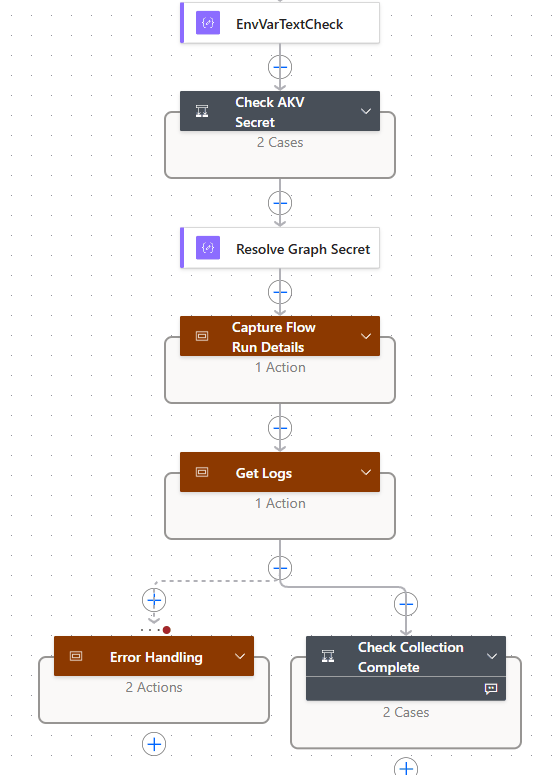
Reading the top level
- A Trigger and variables (collapsed) set the collection window, counters and flags. 23 actions.
- B
EnvVarTextCheck,Check_AKV_SecretandResolve_Graph_Secretread the app secret from Key Vault or from a plain-text environment variable. 8 actions. - C
Capture_Flow_Run_Detailswrites a Running row to Copilot Interaction Flow Runs. 2 actions. - D1–D4
Get_Logscreates the Graph query, waits for it, reads each page and upserts every record. 46 actions. - E
Error_Handlingends the run as Failed ifGet_Logsfailed. 3 actions. - F
Check_Collection_Completeends the run as Failed if data is missing or partial. 3 actions.
85 actions in total. The phase map lists them, and the control-flow and sequence diagrams show how they connect.
Every part, in order
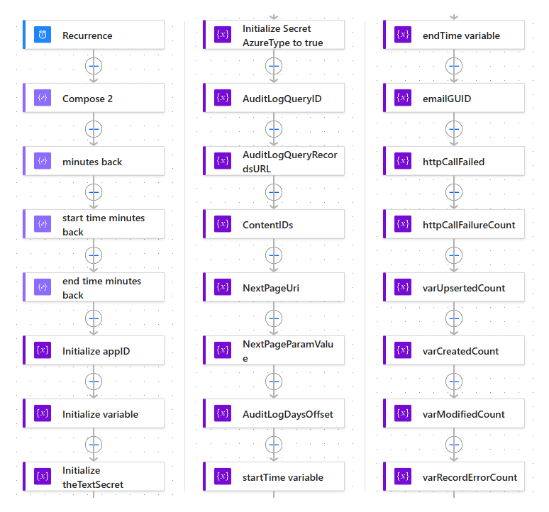
A Initialise: the window, counters and flags. 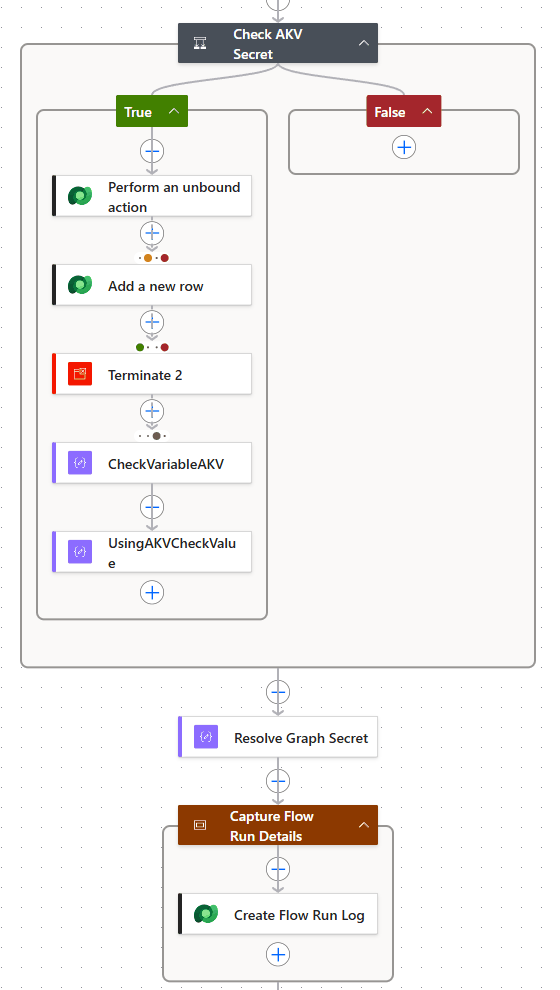
B and C Secret and run log: Key Vault or plain text, then a Running row. 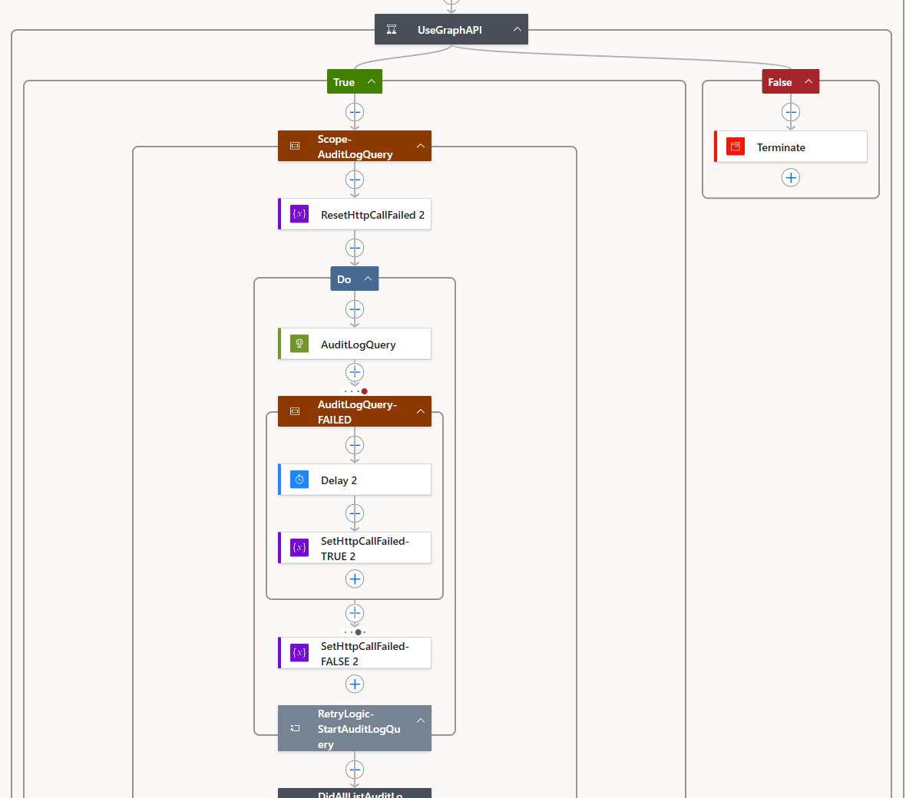
D1 Create the query, with retries. 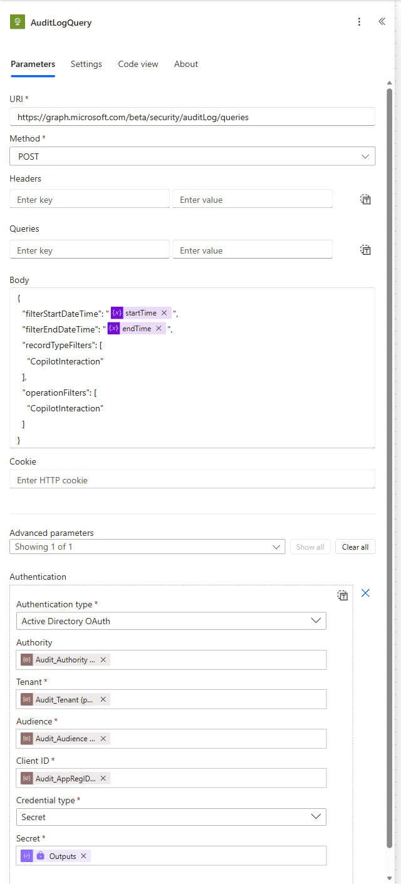
D1 The HTTP request: method, URI, body and authentication. 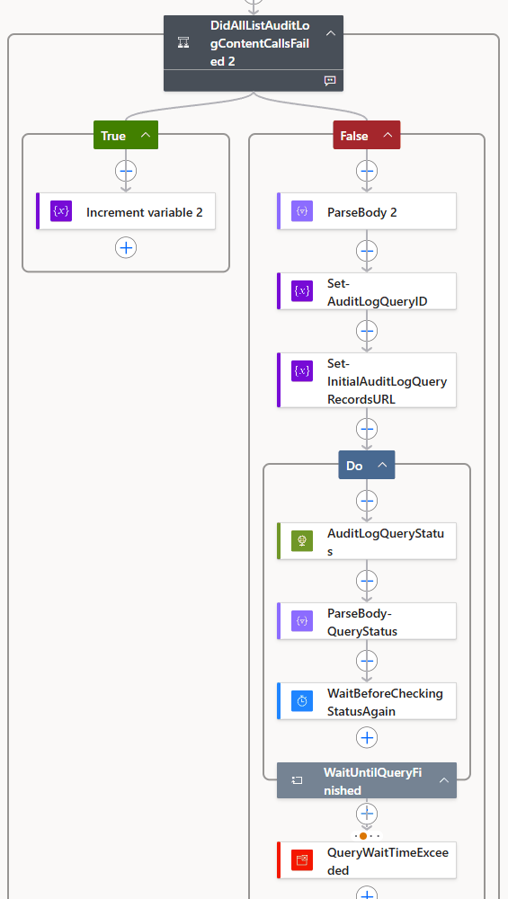
D2 Wait for the query: a status check every 60 seconds. 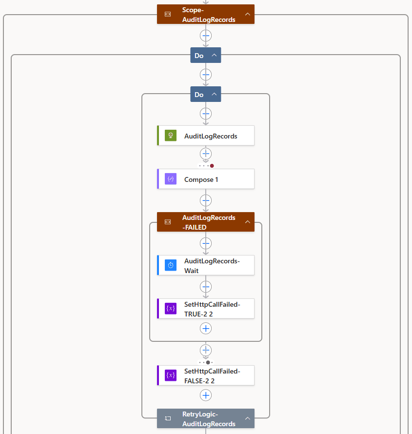
D3 Fetch a page of up to 500 records, with retries. 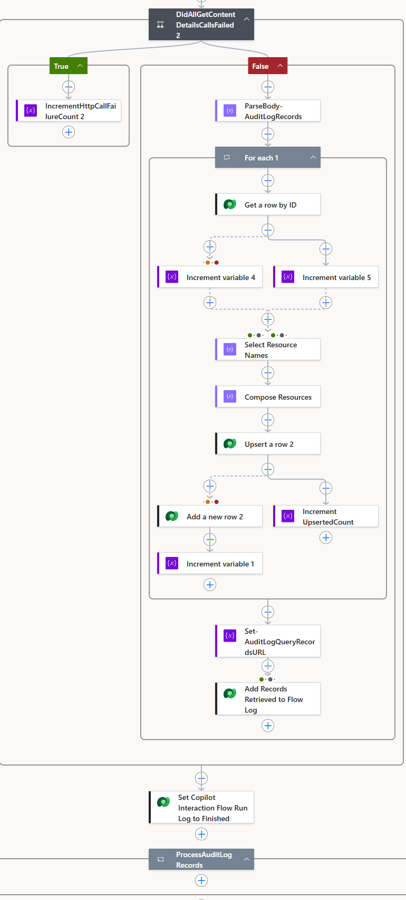
D4 Upsert each record, then move to the next page. 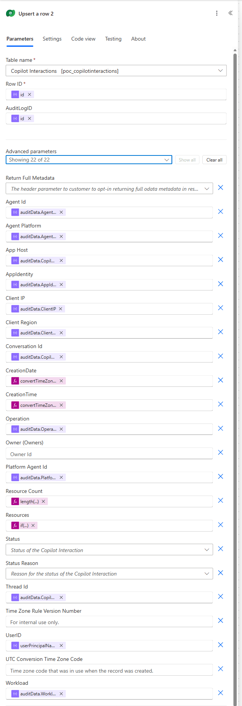
D4 Column mapping: audit record fields to Dataverse columns. 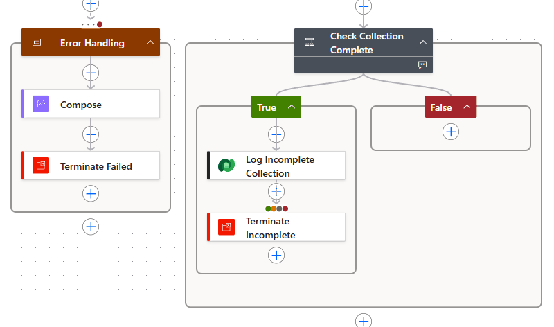
E and F Error handling and completeness: fail loudly.


Under the hood
The HTTP calls
Three HTTP actions do all the talking to Microsoft Graph. AuditLogQuery creates an audit log query, AuditLogQueryStatus waits for it to finish, and AuditLogRecords reads its records a page at a time. This section shows what each one sends and what the Parse JSON action after it expects back. The flows use no Graph connector: the HTTP actions sign in on their own, as in the CoE Starter Kit pattern. For your own build, consider a custom connector.
How each call signs in
All three actions use Active Directory OAuth to get an app-only token, so no user signs in and no connection is needed. The D1 screenshot shows these fields in the designer.
| Field | Value |
|---|---|
| Authority | Audit_Authority, default https://login.windows.net |
| Tenant | Audit_Tenant: your directory (tenant) ID |
| Audience | Audit_Audience, default https://graph.microsoft.com |
| Client ID | Audit_AppRegID |
| Credential type | Secret, from the output of Resolve_Graph_Secret (option A or B), or Certificate (option C) |
Turn on secure inputs for all three actions, so the secret and the token request stay out of run history.
What the app registration needs
The Microsoft Graph application permission AuditLogsQuery.Read.All, with admin consent. Tested on the beta endpoint, it covers all three calls. AuditLog.Read.All isn't enough, and there's no Copilot-specific permission.
The permission isn't limited to Copilot: whoever holds the credential can query audit records from every audited service in the tenant. Get it approved before you build (see Read this first).
The reference build calls the beta endpoint, where all three calls were tested. Moving to v1.0 is untested: it means dropping the record-type filter, regenerating the Parse JSON schemas and checking the permissions again, so try it in a sandbox first (Switching to v1.0).
The three calls
| Step | Request | Success and retries | What happens with the response |
|---|---|---|---|
D1AuditLogQuery |
POST …/security/auditLog/queries with the JSON body below: the time window, plus the CopilotInteraction record type and operation. |
201 Created. Wrapped in RetryLogic-StartAuditLogQuery: up to 5 attempts or 5 minutes, waiting 20 seconds after a failure. |
ParseBody_2 reads the new query's id. Set-AuditLogQueryID keeps it, and Set-InitialAuditLogQueryRecordsURL builds the first page's URL: …/queries/{query-id}/records?$top=500. |
D2AuditLogQueryStatus |
GET …/security/auditLog/queries/{query-id}, no body. |
WaitUntilQueryFinished asks every 60 seconds until the status is succeeded: up to 480 checks or 8 hours (manual flow: 300 checks or 3 hours). |
ParseBody-QueryStatus reads status: notStarted, running, succeeded, failed or cancelled. |
D3AuditLogRecords |
GET {records URL}, no body and no extra headers. The first URL comes from D1; each later one is the previous page's @odata.nextLink. |
200 OK. Wrapped in RetryLogic-AuditLogRecords: up to 5 attempts or 10 minutes, waiting 30 seconds after a failure. The outer loop, ProcessAuditLogRecords, makes one pass per page: up to 100 pages (manual flow: 1,000) or 10 hours. |
ParseBody-AuditLogRecords reads value, an array of up to 500 records, and @odata.nextLink. D4 upserts each record, then copies the link into the records URL. The last page has no link, so the loop ends (tested with 550 records over two pages). |
Shown with … for https://graph.microsoft.com/beta. Placeholders in braces are filled in by the flow at run time.
The D1 request body
The two variables hold the one-day window that phase A works out; the end time is exclusive. Filtering on the record type and the operation keeps the query to Copilot interactions.
{
"filterStartDateTime": "@{variables('startTime')}",
"filterEndDateTime": "@{variables('endTime')}",
"recordTypeFilters": ["CopilotInteraction"],
"operationFilters": ["CopilotInteraction"]
}This recordTypeFilters value works on beta only; v1.0 has no such member.
A records schema that won't stall paging
The reference schema marks 13 properties of each record as required. One record that lacks any of them, or has null in a typed one, fails Parse JSON: the page isn't written, the URL doesn't move on, and the same page is read again until the loop limits. Requiring only id avoids that. Validate it against a page from your own tenant:
{
"type": "object",
"properties": {
"@odata.nextLink": { "type": "string" },
"value": {
"type": "array",
"items": {
"type": "object",
"properties": {
"id": { "type": "string" },
"userPrincipalName": {},
"auditData": {}
},
"required": ["id"]
}
}
}
}How the retries work
D1 and D3 each sit inside a small Do until loop, a pattern inherited from the CoE Starter Kit. If the call fails, a failure scope waits and sets httpCallFailed to true, and the loop tries again. If the last attempt still failed, a condition adds 1 to httpCallFailureCount, which the completeness check in phase F reports.
The HTTP actions' own retry policy already handles timeouts (408), throttling (429) and server errors (5xx). It doesn't retry authentication errors such as 401, but the loop still makes its five attempts. Tested with an invalid client secret: D1 used all five, D3 then failed on an empty URL, and the run ended as Failed after about 4.5 minutes, with "query started: no" in the completeness check.
Three gaps to close in your build
- Only
succeededends the D2 wait. Also stop onfailedorcancelled, then fail the run unless the status issucceeded. The reference build'sQueryWaitTimeExceededaction never runs, so don't rely on it. - Skip D3 when D1 didn't return a query ID, instead of reading an empty URL.
- The D3 response holds user names, IP addresses and file names. Turn on secure outputs for
AuditLogRecordsas well as secure inputs, so they stay out of run history.
Recommended: review the HTTP actions and consider a custom connector
The flows call Graph with the built-in HTTP action because they're adapted from the CoE Starter Kit's audit log flows, which work the same way. Review that choice before you go to production, and consider wrapping the three Graph calls in a custom connector instead.
Why it helps
- Governance. Data policies can classify a custom connector on its own, by name in an environment or by host URL across the tenant (data policies for custom connectors). The environment then doesn't have to allow the general-purpose HTTP connector.
- No secret in the flow. The connector and its connection hold the sign-in, so no secret passes through the flow's actions or run history, and the Phase B secret lookup is no longer needed.
- Reuse. The three calls become named operations with defined request and response schemas, shared by every flow that uses the connector.
Check before you switch
- The sign-in changes. Microsoft notes: "Currently, client credentials grant type is not supported by custom connectors" (authentication). That's the app-only sign-in the HTTP actions use. The connection would sign in as a user account with delegated Graph permissions instead, or the connector would call an endpoint you host, for example in Azure API Management, that signs in to Graph with a managed identity. Either way, who holds the access changes, so put it through the same security review as the app registration.
- Secrets. If the connector needs a client secret, keep it in a Secret-type environment variable backed by Azure Key Vault. A Text-type one "isn't secure. These values aren't encrypted" (environment variables in custom connectors).
- Paging. Graph says to use the entire
@odata.nextLinkURL: "Don't try to extract the$skiptokenor$skipvalue and use it in a different request" (paging). Make sure the connector can follow that URL. - Re-test. Rebuild D1 to D3 in a sandbox, and compare the query wait, paging, retries and row counts with the HTTP build before you remove the HTTP actions. Both are premium, so licensing doesn't change.
Every action, with its settings, purpose and the change a clean build should make: HTTP authentication · D1 · D2 · D3 · D4 · Securing run history · Limits and throttling.
Before you build
Prerequisites and permissions
| Area | Requirement | Why |
|---|---|---|
| Microsoft 365 | Unified audit logging turned on (turn auditing on or off, set up Audit (Standard)) | Copilot interactions are logged as part of Audit (Standard). |
| Microsoft 365 | Global (commercial) cloud | The audit log query API isn't available in the US Government L4/L5 (DoD) or 21Vianet clouds. |
| Entra ID | An app registration in your tenant (register an app) | The identity the flows sign in as. |
| Entra ID | Microsoft Graph application permission AuditLogsQuery.Read.All, with admin consent | Required by the audit log query API. |
| Entra ID | Privileged Role Administrator or Global Administrator, to grant consent | Consent to Microsoft Graph application permissions needs one of these roles. |
| Entra ID | A client secret on the app registration | Used by the HTTP actions. For certificates, see option C. |
| Power Platform | An environment with Dataverse | Holds the solution, tables and flows. |
| Power Platform | The builder is a System Administrator or System Customizer in that environment | Needed to create the tables, environment variables, connection reference and flows. |
| Power Platform | A Microsoft Dataverse connection, owned by the flow owner | Used by the build's Dataverse connection reference (connection references). |
| Power Platform | A premium Power Automate licence for the flow owner; for a busy tenant, consider a Process licence for the scheduled flow | The HTTP and Dataverse connectors are premium. Each record costs several Power Platform requests, so a busy tenant can exceed a user licence's daily request limit; see Limitations. |
| Power Platform | A data policy that allows HTTP and Dataverse together (or your custom connector and Dataverse, if you use one) | Otherwise the flows are suspended. |
| Azure (option A only) | A Key Vault, the Microsoft.PowerPlatform resource provider, and RBAC role assignments | See option A. |
Decide first
Secret-handling decision: how the client secret is stored
Choose before you build
The flows authenticate to Microsoft Graph with the app registration's credential, and where that credential lives is your decision, agreed with your security team. Nothing in this guide is pre-filled: you create every environment variable and enter every value yourself. The flows choose where to read the secret from using poc_Audit_UsingAKVtruefalse.
Scripts are off: all three options are shown below.
Option A — Azure Key Vault (recommended)
- Where the secret lives
- A Key Vault secret. Dataverse holds only a reference to it.
- Who can read it
- Identities with Key Vault Secrets User on the vault, and Dataverse when a flow asks for it.
- Exported with the solution?
- Only the reference, never the secret.
- Rotation
- Update the secret in Key Vault, then save the flows or turn them off and on.
- Effort
- Medium: Azure subscription, vault, RBAC and networking.
- Settings
poc_Audit_UsingAKVtruefalse=true;poc_KeyVaultSecretset;poc_Audit_Secretempty.- Suits
- Production.
Follow Microsoft's Use Azure Key Vault secrets guidance. In summary:
- Register the
Microsoft.PowerPlatformresource provider in the Azure subscription that holds the vault. - Use a vault in the same tenant as Power Platform, with the Azure RBAC permission model. Microsoft suggests a separate vault for each environment.
- Add a secret that holds the client secret's Value (not its Secret ID).
- Assign the Key Vault Secrets User role to:
- the user who will create the environment variable;
- the Dataverse service principal, application ID
00000007-0000-0000-c000-000000000000. Remove any Dataverse role assignment with a different application ID.
- If the vault's firewall is on, remember that Power Platform isn't covered by the "Trusted Services Only" option. Allow the Power Platform IP addresses, or use virtual network support.
- Create
poc_KeyVaultSecretas a Secret environment variable. Power Apps asks for the subscription ID, resource group name, vault name and secret name, and builds the reference:/subscriptions/{subscriptionId}/resourceGroups/{resourceGroupName}/providers/Microsoft.KeyVault/vaults/{keyVaultName}/secrets/{secretName} - Set
poc_Audit_UsingAKVtruefalsetotrue, and leavepoc_Audit_Secretempty.
How the flow reads it. Secret environment variables aren't available in the dynamic content selector, so the flow calls the Dataverse unbound action RetrieveEnvironmentVariableSecretValue with the variable's schema name and reads outputs('Perform_an_unbound_action')?['body/EnvironmentVariableSecretValue']. The action has secure inputs and outputs. If it fails, the flow writes an error row (no run log row exists yet) and ends the run as Failed with KeyVaultSecretUnavailable, before any Graph call is made. Secret environment variables work only with Power Automate flows, Copilot Studio agents and custom connectors. See Phase B.
Option B — Plain-text environment variable (not recommended)
Not recommended
This option stores a credential for a tenant-wide, high-privilege permission in clear text. Use Key Vault or a certificate instead. It's documented only because the reference build was live-tested this way; if you use it at all, keep it to a short-lived secret in an isolated test environment.
- Where the secret lives
- A Text environment variable value in Dataverse.
- Who can read it
- Anyone who can read environment variable values in the environment.
- Exported with the solution?
- Yes, in clear text, if a current value is in the solution. Remove it before export.
- Rotation
- Update the value, then save the flows or turn them off and on.
- Effort
- Low.
- Settings
poc_Audit_UsingAKVtruefalse=false;poc_Audit_Secretset.- Suits
- Not recommended. At most, an isolated test environment with a short-lived secret.
- Set
poc_Audit_UsingAKVtruefalsetofalse. - Enter the client secret's Value, not its Secret ID, as the Current value of
poc_Audit_Secret. Leave its Default value empty, because the default is part of the variable's definition and is always exported. - Use a short-lived secret, and never use this option in production.
- Before you export the solution, open the variable and, under Current Value, select ... > Remove from this solution.
See Environment variables overview and Storing the client secret.
Option C — Certificate (advanced)
- Where the secret lives
- A certificate (PFX) and its password, ideally in Key Vault.
- Who can read it
- As option A or B, depending on where you store the PFX and password.
- Exported with the solution?
- As option A or B.
- Rotation
- Upload a new certificate, then update the stored PFX and password.
- Effort
- High: in both flows, set Credential Type to Certificate on
AuditLogQuery,AuditLogQueryStatusandAuditLogRecords. The reference build was tested with a client secret only. - Settings
- Your own variables for the PFX and password.
- Suits
- Production, where policy requires certificates.
Microsoft recommends a certificate rather than a client secret in production. Upload the certificate's public key to the app registration (certificate credentials). Then, in both flows, set Credential Type to Certificate on the three HTTP actions, and supply Pfx (the base64 content of the PFX file) and Password. Store both as you would a client secret, ideally in Key Vault, and pass them through a Compose action with secure inputs, as Resolve_Graph_Secret does. The reference build hasn't been tested with a certificate, so validate the change with the manual flow before you rely on it. See HTTP authentication.
Compare all three options side by side
| Aspect | A: Azure Key Vault (recommended) | B: Plain-text environment variable (not recommended) | C: Certificate (advanced) |
|---|---|---|---|
| Where the secret lives | A Key Vault secret. Dataverse holds only a reference to it. | A Text environment variable value in Dataverse | A certificate (PFX) and its password, ideally in Key Vault |
| Who can read it | Identities with Key Vault Secrets User on the vault, and Dataverse when a flow asks for it | Anyone who can read environment variable values in the environment | As option A or B, depending on where you store the PFX and password |
| Exported with the solution? | Only the reference, never the secret | Yes, in clear text, if a current value is in the solution. Remove it before export. | As option A or B |
| Rotation | Update the secret in Key Vault, then save the flows or turn them off and on | Update the value, then save the flows or turn them off and on | Upload a new certificate, then update the stored PFX and password |
| Effort | Medium: Azure subscription, vault, RBAC and networking | Low | High: in both flows, set Credential Type to Certificate on the three HTTP actions. Tested with a client secret only. |
| Settings | poc_Audit_UsingAKVtruefalse = true; poc_KeyVaultSecret set; poc_Audit_Secret empty | poc_Audit_UsingAKVtruefalse = false; poc_Audit_Secret set | Your own variables for the PFX and password |
| Suits | Production | Not recommended; at most an isolated test environment with a short-lived secret | Production, where policy requires certificates |
Caution: the switch is an exact text match
In the reference build, only true (lower case, no spaces) is guaranteed to select Key Vault. A value such as yes, or true with a trailing space, silently selects the plain-text secret instead. If that's empty, sign-in fails with AADSTS7000215 and nothing points to the switch. In your build, normalise the value with toLower(trim(...)) or use a Two options variable.
Client secrets last 24 months at most, and Microsoft recommends less than 12. The value is shown only once, when you create it. When a secret expires, the Graph calls fail and the run log shows the query never started; see Troubleshooting and Rotating the secret.
Configuration
Environment variables
The flows read their settings from Dataverse environment variables, so the same flows work in every environment. poc is the reference build's publisher prefix; yours will be your own publisher's prefix. In code view, a flow refers to a variable by display name and schema name, for example parameters('Audit_Tenant (poc_Audit_Tenant)'). Create these:
The last column and the highlighted rows follow the option chosen in the secret-handling decision.
| Schema name (display name) | Type | Default value | Purpose | Clean build | With option A |
|---|---|---|---|---|---|
poc_Audit_TenantAudit_Tenant | Text | (none) | Your tenant ID, for the HTTP actions' Tenant | Keep | Set |
poc_Audit_AppRegIDAudit_AppRegID | Text | (none) | The app registration's client ID | Keep | Set |
poc_Audit_UsingAKVtruefalseAudit_UsingAKVtruefalse | Text | false | The secret-storage switch. Only true selects Key Vault. | Change. Normalise the value, or use Two options. | Set to true |
poc_KeyVaultSecretKeyVaultSecret | Secret | (none) | Option A: the Key Vault reference (see option A) | Keep for option A | Set: the Key Vault reference |
poc_Audit_SecretAudit_Secret | Text | (none) | Option B (not recommended): the client secret value. Stored in clear text. | Keep for option B only | Leave empty (or omit in a clean build) |
poc_Audit_AuthorityAudit_Authority | Text | https://login.windows.net | The sign-in authority | Keep | Keep the default |
poc_Audit_AudienceAudit_Audience | Text | https://graph.microsoft.com | The token audience | Keep | Keep the default |
Don't create the three legacy variables in the reference build: poc_Audit_ReviewerEmail (unused), poc_AuditMinutestoLookBack (Decimal number, 65) and poc_AuditEndTimeMinutesAgo (Decimal number, 2820). Only legacy Compose actions read the last two.
Changing a value
Flows keep using the previous value until they're saved, or turned off and on again. After any change, save both flows and run the manual flow over a short window. See Changing a value and Environment variables in the action reference.
From an empty environment
Build from scratch: step by step
No solution package is published, so you create every component yourself, in this order, in a development environment. Building it yourself means you choose the secret option, publisher prefix, retention and security that fit your organisation, rather than inheriting someone else's. Get the approvals described in Read this first before step 1. Each step links the detail you need. Tick each step as you finish it; progress is saved in this browser only.
Register the app
- In the Entra admin center, go to App registrations > New registration. Choose a single-tenant registration.
- Go to API permissions > Add a permission > Microsoft Graph > Application permissions, and add
AuditLogsQuery.Read.All.AuditLog.Read.Allisn't enough. - Select Grant admin consent. This needs a Privileged Role Administrator or Global Administrator.
- Go to Certificates & secrets > New client secret. Choose an expiry of less than 12 months (24 months at most), and copy the Value straight away: it's shown only once. Record the expiry date and an owner for rotation.
A certificate is preferred in production. See Graph permissions.
Store the secret
Store it using the option you chose in the secret-handling decision.
Option A: add the secret value to Key Vault, grant Key Vault Secrets User to yourself and the Dataverse service principal, and keep the vault details ready for when you create
poc_KeyVaultSecretin step 5 (see option A).Option B: keep the secret value ready to enter as the current value of
poc_Audit_Secretin step 5. Not recommended (see option B).Option C: upload the certificate's public key to the app registration, and store the PFX and its password, ideally in Key Vault. You set the HTTP actions' credential type to Certificate in step 7 (see option C).
Create a publisher and a solution
- In the development environment, go to Solutions > New solution and create a new publisher with your own prefix. This guide uses
poc, the reference build's prefix; read it as yours throughout. - Create the solution with that publisher. Create everything in steps 4 to 7 inside the solution, so the tables, variables, connection reference and flows move together when you promote it.
See solution concepts and create a solution.
- In the development environment, go to Solutions > New solution and create a new publisher with your own prefix. This guide uses
Create the three tables
- Copilot Interactions: one row per audit record. Rename the primary name column to Audit Log ID, then add the 16 columns in the data model.
- Copilot Interaction Flow Runs: the run log, with the two choice columns Flow State (Running, Finished) and Run Type (Scheduled, Manual) and the four whole-number count columns.
- Copilot Interaction Flow Run Errors: one row per failure. In a clean build, add a lookup from each error row to its run.
Use the exact column types and lengths in Dataverse tables (create tables). Choice values come from your publisher, so when a flow sets a choice column, pick the option by its label.
Create the environment variables
Create only the variables your secret option needs, from the seven in Environment variables:
- Always:
Audit_Tenant,Audit_AppRegID,Audit_AuthorityandAudit_Audience. - Option A or B: the switch
Audit_UsingAKVtruefalse. - Option A: the Secret-type variable
KeyVaultSecret, pointing at your vault. - Option B (not recommended): the Text variable
Audit_Secret. - Option C: your own variables for the certificate's PFX and password, ideally Key Vault-backed.
Leave every default value empty or non-sensitive, because defaults are always exported with the solution (environment variables in flows).
- Always:
Create a connection reference
In the solution, select New > More > Connection reference, choose Microsoft Dataverse, and map it to a connection owned by the account that will own the flows. Both flows use this one reference for every Dataverse action. The HTTP actions need no connection: they sign in with the app registration (connection references). If you use a custom connector for the Graph calls, create it in the solution first, and add a connection reference for it too.
Build the flows
Create a new scheduled cloud flow inside the solution (daily recurrence), then add the actions in this order. The screenshots show each part.
- Phase A: initialise the variables and the collection window (one UTC day, from midnight four days ago to midnight three days ago).
- Phase B: resolve the secret for your option, with secure inputs and outputs.
- Phase C: add the run log row with Flow State set to Running.
- D1 to D3: create the audit log query, wait for it to finish, then read the records page by page.
- D4: upsert each record into Copilot Interactions and update the run counts.
- Phases E and F: write error rows and fail the run if collection is incomplete.
Then build the manual flow the same way, with a manual trigger that takes two dates and the few differences listed there. Turn on the recommended secure inputs and outputs, size the loop limits for your volume, and add a note to each action saying why it exists (solution-aware flows).
Validate
Run the manual flow over one day that's at least four days old. For example, if today is the 10th, use StartDate
…-06and EndDate…-07.For example, today you could use StartDate…and EndDate…(UTC; EndDate is exclusive). Then confirm all of these:- the run Succeeded in run history;
- the new Copilot Interaction Flow Runs row shows Records Retrieved above 0, if anyone used Copilot that day;
- the Copilot Interactions row count for that day is close to a Purview Audit search over the same day;
- Copilot Interaction Flow Run Errors has no new rows;
- run history doesn't show the secret.
Then work through the clean-build checklist.
Lock it down
Give report readers a read-only security role, schedule a bulk-delete job for your retention period, confirm the data policy and set up monitoring (see Failure states and monitoring). Secure run history as described in Securing run history.
Promote it
Before you export, remove the current value of every environment variable from the solution, so no secret, tenant ID or client ID leaves the environment. Then export the solution as managed and import it into test, then production (export solutions), and set the environment variable values in each target environment.
Dataverse
Data model
The flows write to three custom tables. All three are user or team owned, and none uses auditing, change tracking or alternate keys. This guide includes no security role, so create your own. See Dataverse tables written by the flows and Upsert mapping.
The tables aren't related in the reference build. A clean build adds a lookup from each error row to its run.
CreationTime is an hour out during British Summer Time
The reference build converts the audit time from UTC to UK time and sends it with no offset, and Dataverse stores a value without an offset as UTC. In your build, send UTC: formatDateTime(items('For_each_1')?['auditData']?['CreationTime'], 'yyyy-MM-ddTHH:mm:ssZ') for CreationTime, and the same expression with 'yyyy-MM-dd' for CreationDate. See Upsert mapping.
Copilot Interactions (poc_CopilotInteraction): one row per audit record
| Column | Source (auditData unless noted) | Notes |
|---|---|---|
poc_AuditLogID | record id | Primary name column. The upsert also sets the row's primary key (poc_CopilotInteractionId) to the same audit record id, which the lookup and upsert use. There is no alternate key. |
poc_UserID | record userPrincipalName | Personal data. |
poc_ClientIP | ClientIP | Personal data. About 58% populated in the reference data. |
poc_ClientRegion | ClientRegion | |
poc_CreationDate | CreationTime. The reference build converts it to UK time; send the UTC date. | Date only, Time zone independent. |
poc_CreationTime | CreationTime. The reference build converts it to UK time; send UTC. | Date and time, User local. An hour out during British Summer Time in the reference build. |
poc_Operation | Operation | CopilotInteraction. |
poc_Workload | Workload | Copilot. |
poc_AppIdentity | AppIdentity | For example Copilot.M365Copilot.Apps, or Copilot.Studio.<id>-<agent schema name> for Copilot Studio agents. Can be empty. |
poc_AppHost | CopilotEventData.AppHost | The app where the interaction happened, for example Microsoft Teams, Word, Outlook, Office or Copilot Studio. |
poc_AgentId | AgentId | Present when an agent was involved. |
poc_AgentPlatform | AgentPlatform | For example CopilotStudio. Often empty. |
poc_PlatformAgentId | PlatformAgentId | |
poc_ConversationId | CopilotEventData.ConversationId | |
poc_ThreadId | CopilotEventData.ThreadId | Populated on every row in the reference data, so it's the better session key. |
poc_ResourceCount | length of CopilotEventData.AccessedResources | Counted before duplicates are removed. |
poc_Resources | distinct resource Name (or Type), separated by ; | Truncated to 4,000 characters. May reveal confidential file or site names. |
Five of these fields (Agent Id, AppIdentity, Conversation Id, Agent Platform and Platform Agent Id) aren't in Microsoft's published Copilot schema, or are only partly documented. Check them against your own data before you rely on them.
Copilot Interaction Flow Runs (poc_CopilotInteractionFlowRuns): the run log, one row per run
| Column | Notes |
|---|---|
Name | Your own label plus the run start time (UTC). The reference build uses the flow's display name. |
AuditQueryStartDate, AuditQueryEndDate | The collection window. |
FlowStartDateandTime | When the run started (UTC). |
RunType | Scheduled or Manual. |
FlowState | Running while a page is processed, then Finished after each page. It doesn't show whether the window was collected completely; check the run status. |
RecordsRetrieved | Records successfully upserted. Despite the name, it isn't the raw count returned by Graph. |
RecordsCreated | Records the lookup didn't find (new rows), or where the lookup failed. |
RecordsModified | Records that already existed. |
RecordsError | Failed upserts. Those records weren't saved. |
The counts are running totals, updated after each page, and include pages that were read more than once. Treat them as indicative; run history is authoritative.
Copilot Interaction Flow Run Errors (poc_CopilotInteractionFlowRunErrors): one row per failure
Columns: PrimaryDetail, ErrorReason, ErrorDate, ErrorDateandTime. The flows write three kinds of row:
PrimaryDetail starts with | Written | Details |
|---|---|---|
| Failed - Upsert a row 2 | Once per record whose write failed | The row doesn't include the audit record id. |
| Failed - Collection incomplete - window … - run … | Once per incomplete run | ErrorReason gives Query started, Pages left unread and Failed Graph calls. The run then fails with CollectionIncomplete. |
| Failed - Unbound Action call to AKV | Option A only, when the Key Vault secret can't be read | The run then fails with KeyVaultSecretUnavailable. |
For reporting ideas, see Reporting.
Personal data
Copilot Interactions holds personal data. Restrict all three tables with security roles, agree a retention period and delete older rows on a schedule with a bulk deletion job.
Build your own view
Reporting
The build is a collector only: you build the report. Connect Power BI to the three tables with the Dataverse connector, or use any Dataverse client.

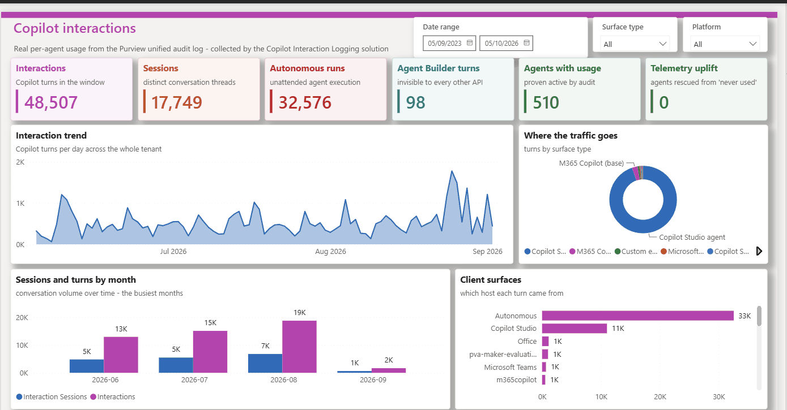
Ideas for a first report
- Interactions over time from CreationDate, once you store UTC (see Data model).
- Sessions as distinct Thread Id values. Thread Id is populated on every row in the reference data, so it's a better session key than Conversation Id.
- Where people use Copilot, by App Host and AppIdentity.
- Agents, by Agent Id and Agent Platform, joined to your own agent inventory.
- Collection health from the run log and error rows, including days with no rows (see Failure states).
For a fuller example that combines this data with agent inventory from several platforms, see Custom Agent Reporting – Architecture. There, these tables sit in one reporting environment alongside the other collectors' tables, so its Power BI model reads them all through a single Dataverse connection. If you build both, put them in the same environment.
Run
Failure states and monitoring
Important
Run history is the source of truth. The FlowState column only ever shows Running or Finished, never Failed, and Finished is set after every page, not only at the end. A failed run can leave its row on Running, or show Finished with partial counts.
| Run result | Code / action | Meaning | What to do |
|---|---|---|---|
| Succeeded | Every page was read and every record was upserted, or the failures were logged as error rows. | Check RecordsError and the error rows. | |
| Failed | CollectionIncomplete | The query never started, or pages were left unread. An error row records Query started, Pages left unread and Failed Graph calls. | Fix the cause (see Troubleshooting), then re-run the window with the manual flow. |
| Failed | GetLogsFailed | An unhandled failure inside the collection scope (Get_Logs). The reference build writes no error row for it. | Open the run, find the failed action, fix it and re-run the window. |
| Failed | KeyVaultSecretUnavailable | Option A only: the Key Vault secret couldn't be read. An error row is written before the run log exists. | Check RBAC, the resource provider, networking and the reference path. |
| Failed | QueryWaitTimeExceeded action | Meant to stop a run whose query didn't finish in time. It never ran in testing, because a Do until loop that reaches its limit ends Succeeded (Until-loop considerations). | In your build, check the query's status after the wait loop and fail the run if it isn't succeeded. |
| Any | RecordsError above 0, or Failed - Upsert a row 2 rows | At least one record write failed. If the run failed, records are missing. If it succeeded, the page was read again and the write succeeded on a later pass. | Fix the cause (for example capacity, permissions or throttling), then re-run the window. Re-running is safe. |
Failed, while FlowState shows Finished | CollectionIncomplete | The run log was marked Finished after the last page processed, then the completeness check failed the run. | Trust the run status, and re-run the window. |
Monitoring options
The reference build sends no alerts. Choose at least one:
- Power Automate's built-in failure notification emails to the flow owner.
- An alert flow on the Dataverse cloud flow run metadata.
- The CoE Starter Kit.
- A Power BI tile showing days with no rows.
Run history is kept for 28 days (limits, missing run history), so record failures somewhere that lasts longer. See also the error-handling guidance, and Failure paths and Known issues in the action reference.
Day two
Operations
Missed days are not self-healing
The scheduled flow always collects the UTC day from four days ago. If a run fails, or the flow is off, that day is never collected again unless you back-fill it with the manual flow.
Back-fill with the manual flow
Run the manual flow with StartDate and EndDate in YYYY-MM-DD format.
- EndDate is exclusive. To collect 1 to 7 September, enter 1 September and 8 September.
- Keep EndDate at least 48 hours in the past, and StartDate within the last 180 days (the Audit (Standard) retention).
- Overlapping windows are safe: the upsert updates existing rows rather than duplicating them.
- Every run has the same 10-hour paging limit, so back-fill a few days at a time rather than weeks in one run (see Planning for high volumes).
- British Summer Time. During BST, the reference build's manual window starts and ends at 01:00 UTC, so it misses the first hour of StartDate. Start one day earlier, or apply the fix in The manual flow:
@{triggerBody()?['date']}T00:00:00Z.
Volume
The flow writes about 25 to 60 records a minute, so the 10-hour paging limit runs out at roughly 15,000 to 36,000 records a day. On a busier day, split the day into smaller windows. Don't turn on concurrency for the per-record loop: its counters are flow variables, and they become unreliable when iterations run in parallel. See Planning for high volumes.
Time zone
Store UTC (see Data model) and convert to local time in the report.
Schedule
The reference build's Recurrence trigger sets no start time or hour, so it runs at about the time the flow was turned on. In your build, set an hour, for example 02:00.
Retention
Create a recurring bulk deletion job that removes rows older than the agreed period from all three tables.
Rotating the secret
- Add a new client secret to the app registration.
- Update the Key Vault secret (option A) or
poc_Audit_Secret(option B) with the new secret's Value. - Save both flows, or turn them off and on again.
- Run the manual flow over a short window.
- Delete the old secret.
Auditing changes
Turn on Dataverse auditing for the environment variable tables, to record who changed credentials or settings.
Fix
Troubleshooting
| Symptom | Likely cause | Fix |
|---|---|---|
AADSTS7000215 (invalid client secret) | The secret ID was used instead of its Value; the secret has expired; or the switch isn't exactly true and poc_Audit_Secret is empty. | Check the value, the expiry and the switch (see Secret handling). |
AADSTS700016 (application not found) | The wrong client ID in poc_Audit_AppRegID, or the wrong tenant in poc_Audit_Tenant. | Copy both from the app registration's Overview page. |
| HTTP 401 or 403 from Graph | AuditLogsQuery.Read.All is missing, or admin consent wasn't granted. AuditLog.Read.All isn't enough. | Add the permission and grant consent (see Graph permissions). |
Failed with KeyVaultSecretUnavailable | The Key Vault secret couldn't be read. | Check the reference, the role assignments, the network rules and the secret's expiry (see option A). |
CollectionIncomplete with "Query started: no" | The query was never created, for example because of an expired secret, missing consent or Conditional Access. The run takes a few minutes to fail, because the records loop still makes its 5 attempts. | Fix the cause, then re-run the window. |
CollectionIncomplete with "Pages left unread: yes" | The page cap or the 10-hour limit was reached, or a page couldn't be read. | Re-run the window in smaller parts (see Failure paths). |
| Run succeeds but writes no rows | No Copilot activity in the window, auditing is off, or the records hadn't arrived yet. | Compare with a Purview Audit search for the same window, and keep windows at least 48 hours old. |
| Flow is suspended or turned off | The data policy, the connection reference or the owner's licence. | Check the data policy, the connection and the licence. |
| Times look an hour out | The British Summer Time defect in the reference build. | Store UTC (see Upsert mapping). |
| HTTP 429 from Graph | Throttling. The retry loops wait a fixed time and don't read Retry-After. | Use smaller windows, or run less often (see Limits and throttling). |
No matching rows. Clear the filter to see all ten.
Know before you rely on it
Limitations
Scope
Only audit records where both RecordType and Operation are CopilotInteraction. That covers Microsoft 365 Copilot, Copilot Chat and Copilot Studio agents. These aren't collected:
ConnectedAIAppInteraction;AIAppInteraction, which for non-Microsoft AI apps uses Purview pay-as-you-go billing;TeamCopilotInteraction(Facilitator);- Copilot admin activity.
Query wait
If Graph takes longer than the wait limit (8 hours scheduled, 3 hours manual) to finish the query, the wait loop still ends Succeeded, and the flow reads whatever the query returns. The run can therefore record fewer rows than exist. In your build, check the query's status after the wait (see Loop limits).
Record-count limit
A query returns at most 1,000,000 records, and it can show succeeded even when the service stopped early. The reference build doesn't check isRecordCountLimitExceeded; your build should, and should fail the run when it's true (see Limits and throttling).
Run history exposure
In the reference build, the HTTP actions' outputs and the per-record actions aren't secured. Anyone who can see run history (flow owners, co-owners and environment admins) can therefore read raw records, including UPNs, IP addresses and resource names, for 28 days. To hide them in your build, change both flows:
- turn on Secure outputs on the three HTTP actions (
AuditLogQuery,AuditLogQueryStatus,AuditLogRecords); - turn on Secure inputs and Secure outputs, where offered, on
ParseBody-AuditLogRecordsand on the per-record actionsGet_a_row_by_ID,Select_Resource_Names,Compose_ResourcesandUpsert_a_row_2. Compose and Parse JSON offer only Secure inputs, which also hides their outputs.
Securing an action's outputs doesn't hide everything downstream, so run a test afterwards and check the run history. Secured values no longer show in run history, which makes failures harder to debug. See Securing run history, secure inputs and outputs and the coding guidelines.
Throughput
The per-record loop runs one record at a time (the Apply to each default; see concurrency control), at roughly 25–60 records a minute in testing. Concurrency would speed it up, but the run counters are flow variables, which can give unpredictable results in a parallel loop.
Power Platform request limits
On a busy tenant these can matter more than the loop limits (request limits, when a flow is throttled, Request limits).
- Each record costs about 6 requests, and up to 9.
- In the current transition period, a cloud flow gets 200,000 requests per 24 hours: very roughly 20,000–30,000 records a day.
- The official limit is 40,000 requests per user, shared with the owner's other flows: about 4,000–6,000 records a day. At the time of writing, Microsoft says it won't enforce this until at least six months after Power Automate usage reporting becomes generally available.
- For high volumes, assign a Process licence to the scheduled flow: 250,000 requests per 24 hours per licence, and licences can be stacked.
- Check consumption in the Power Platform admin center under Licensing > Power Automate > Usage. Dataverse service protection limits apply separately.
Beta endpoint
The flows use the Microsoft Graph beta endpoint, which isn't supported in production. The v1.0 record-type list has no CopilotInteraction, so a v1.0 build must filter by operation only, and needs validating (see Switching to v1.0).
One tenant, global cloud
One build collects from the tenant of its app registration, in the global (commercial) cloud only.
Collector only
There's no report, alerting or retention job. Build them yourself (see Reporting).
Where the pattern comes from
Origins and credit
This build is adapted from the audit log collection pattern in the Microsoft Power Platform CoE Starter Kit, described in Collect audit logs using an HTTP action with Microsoft Graph. The kit is open source under the MIT licence at github.com/microsoft/coe-starter-kit. Microsoft describes it as no longer actively maintained, with its core capabilities now in the Power Platform admin center. Credit for the original pattern belongs to the CoE Starter Kit team.
This build changes the pattern: it collects only CopilotInteraction records into their own table, logs every run and every failure, lets you choose Key Vault or a plain-text variable (not recommended) for the secret, fails the run loudly when collection is incomplete, and adds a manual back-fill flow. Some legacy actions and variables from earlier versions remain in the reference build and are labelled Legacy in the reference. It keeps the kit's HTTP actions for the Graph calls; for your own build, consider a custom connector instead. See Origins and credit in the action reference.
A vibe-coded demonstration
The very first build was created manually. Further versions and changes have since been made with GitHub Copilot, using the skills in the Power Automate plugin from microsoft/power-platform-skills. Treat this solution as a vibe-coded demonstration of how Power Automate can pull data from the audit log, and review every action before you use it in your own build.